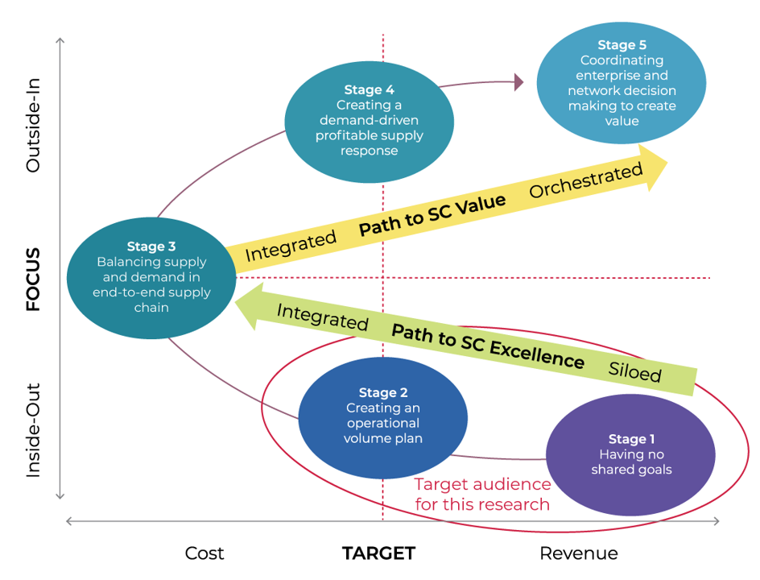
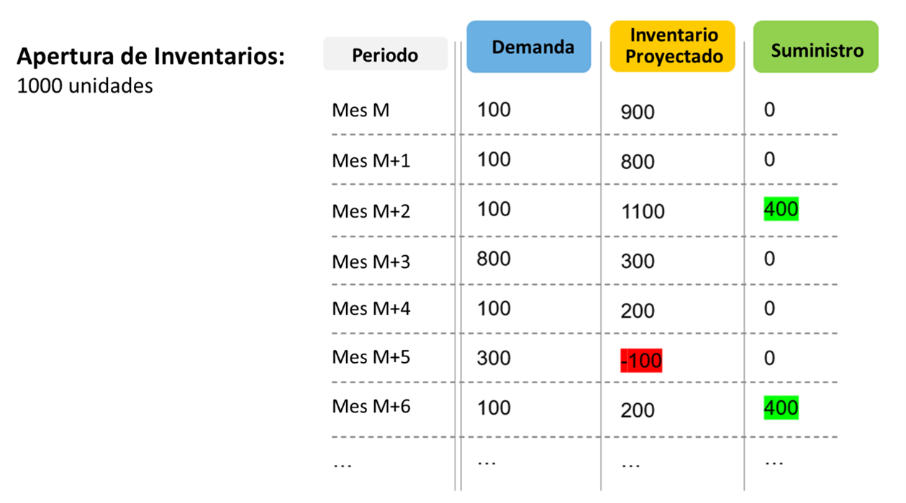
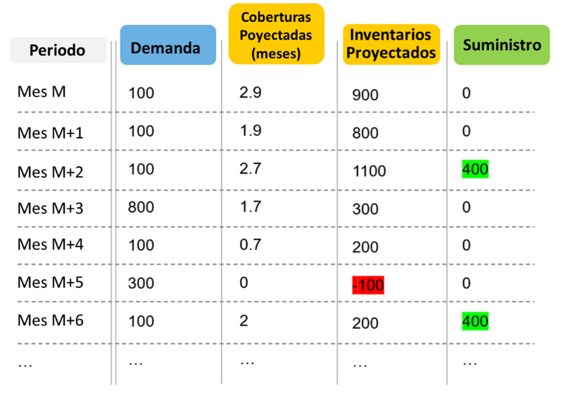
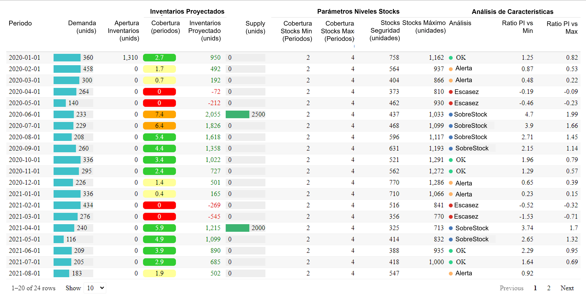

Introducción
Sabía usted que, según el modelo de de cuatro etapas de S&OP Alta-Madurez de Gartner, casi el 70% de las empresas se encuentran estancadas en las fases de reacción y anticipación. Estas áreas suelen centrarse en la elaboración de un plan y la celebración de reuniones periódicas de S&OP para equilibrar la oferta y la demanda en beneficio de la empresa. En consecuencia, se centran totalmente en procesos internos y suelen requerir al menos cuatro años para consolidarse.

Para abordar la incertidumbre, la complejidad y el riesgo que conllevan las cadenas de suministro globales y digitales, es hora de dar el salto a la estapas más maduras de S&OP: colaborar y orquestar. La colaboración implica ampliar el proceso de S&OP a los proveedores y clientes de la empresa; la orquestación describe un proceso impulsado por la detección y el modelado de la demanda, así como por las compensaciones de negocio, como los análisis de riesgo-recompensa (risk-reward). En otras palabras, el enfoque se centran en la rentabilidad.
Dar el salto
Para afrontar la creciente incertidumbre, complejidad y riesgo, se necesitan recursos adicionales. El análisis predictivo, el modelado probabilístico junto a tecnologías como Apache Hadoop, Apache Spark son algunas de las herramientas disposnibles con las que los profesionales de la gestión de la cadena de suministro deberían familiarizarse. Estas soluciones permiten a los usuarios:
- Digitalizar sus cadenas de suministros
- Gestionar mejor la incertidumbre
- Interpretar y comprender de forma más eficaz los datos no estructurados
- Cuantificar cómo reaccionarán sus cadenas de suministro ante los desafíos
- Desarrollar patrones estadísticamente sólidos asociados con los hábitos y sentimientos de compra de proveedores y clientes
Quizás lo más importante es que estas interesantes herramientas pueden facilitar con éxito el salto a las etapas más maduras de S&OP, que se desarrollan desde fuera hacia dentro. De hecho, a medida que permiten a los usuarios de todo tipo de redes acelerar el aprendizaje y mejorar la precisión de la toma de decisiones de última generación, la visión de S&OP cambiará drásticamente, y mucho antes de lo que muchos profesionales creen. Y con cada vez más profesionales de la gestión de la cadena de sumninistro aprovechando estas herramientas y adoptando la S&OP de última generación, las empresas se beneficiarán de progresar al modelo de madurez del análisis predictivo:
- Fase 1: Descriptiva (¿Qué sucedió?)
- Fase 2: Predictiva (¿Qué podría suceder a continuación?)
- Fase 3: Prescriptiva (¿Qué debo hacer al respecto?)
- Fase 4: Cognitiva (¿El sistema aprende?)
El problema que pretendemos resolver
Cuando trabajamos en la planificación de la oferta de la oferta y la demanda, es bastante común que necesitemos calcular los inventarios proyectados (y las coberturas proyectadas relacionadas). Generalmente tenemos tres opciones para realizar este cálculo:
- Un software de planificación avanzado ASP (Advanced Planning System)
- Un ERP como SAP o JDE
- Y por supuesto…, Excel.
Por ejemplo, podríamos obtener un análisis de la situación proyectada de un portafolio (como resultado de una función), de modo que no tengamos que mirar cada producto uno por uno y, en cambio, podamos:
- Obtener fácilmente la vista resumida del portafolio
- Centrarnos en productos con riesgo de escasez (desabastecimiento o quiebre de stock) o exceso de existencias
Con la herramienta tenemos una forma eficiente de ejecutar procesos de monitoreo de la cadena de suministro de un extremo a otro.
Características de la solución
Cálculo de inventarios proyectados
Veamos algunas características de la solución a través de algunos ejemplos.
- Comenzamos con un inventario inicial de 1,000 unidades
- Durante el mes M vendemos 100 unidades (la demanda). Al final del periodo (Mes M), el inventario es de 900 unidades.
- Por lo tanto, hay una demnda de 800 unidades al final del siguiente periodo (M+1)
- Durante el periodo (Mes M+2) obtenemos un suministro de 800 unidades y vendemos 100: ahora hay 1,100 unidades en stock.
Así calculamos los inventarios proyectados

Proyección de cobertura
Otra caraterística de la solución es la proyección de cobertura. Veamoslo a través del siguiente ejemplo.
Consideramos los inventarios proyectados al final de un periodo y evaluamos la cobertura relacionada con base en la próxima demanda.
Metodología
- Miramos el pronóstico de la demanda
- Consumimos las existencias
- 1,000 cubren ~2.9 meses de demanda
- Cobertura de apertura = 2.9 meses

La imagen muestra de forma simple e intuitiva los resultados del cálculo para la columna coberturas proyectadas, considerando los inventarios en un momento dado y la demanda futura.
Si usamos Excel, solemos encontrar un método abreviado para estimar las coberturas relacionadas, como considerar un promedio de la demanda durante los próximos 3 o 6 meses. Esto puede generar resultados incorrectos si la demanda no es constante (por ejemplo si existe estacionalidad o una tendencia marcada). Sin embargo, la solución simplifica estos cálculos.
Ahora, consideremos algunos parámetros como: un objetivo de nivel mínimo de existencias y un objetivo de nivel máximo de existencias. Esto nos permite analizar de un vistazo el cálculo de inventario y la proyección de cobertura frente a los objetivos definidos. Adicionalmente, ahora disponemos de información adicional; como los campos calculados basados en los objetivos de seguridad y existencias máximas, alertas de riesgo de suministro a detalle por SKU.

Podemos ver en la columna de análisis, tenemos varios valores posibles:
- Sobrestock: Significa que los inventarios proyectados superan el objetivo máximo de stock
- OK: Significa que los inventarios proyectados se encuentran entre los objetivos mínimos y máximos de stock
- Alerta: Significa que los inventarios proyectados están por debajo del objetivo mínimo de stock
- Escasez: Significa que los inventarios proyectados son negativos
Tras identificar estos valores, podría surgir una segunda pregunta: ¿en qué medida (en comparación con el objetivo) nos encontramos en una situación de sobrestock o de alerta? Aquí es donde le resultarán útiles los dos ratios (Ratio PI vs Min y Ratio PI vs Max).
El uso de datos para la elaboración de informes estándar mediante hojas de cálculo es común, pero no es suficiente para impulsar la toma de decisiones que genere una ventaja competitiva. Esto incluye a las empresas que ya utilizan los datos de Supply Chain para la previsión y la planificación de inventarios en toda su red de distribución, ya que pueden beneficiarse aún más de la aplicación de analítica avanzada a sus procesos de Supply Chain, que les ofrecen el mayor apalancamiento.
La solución que entrego a mis clientes tiene muchas más características de las que se mencionan aquí. Estaré encantado de ampliarle los detalles.